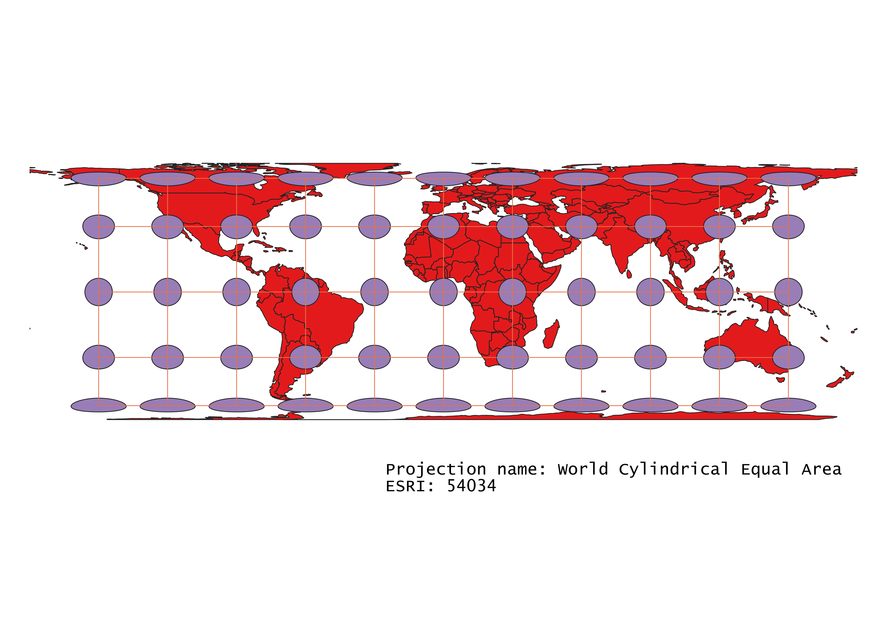

Suzanne Tyler
GEOG 370-006
Homework 3
To complete this project, I first uploaded to QGIS the data provided for the project on Sakai. I then ran the plug-in "Indicatrix Mapper", which added circles and lines to the map. These circles and lines can be used to accurately observe how different projections distort the map. Next, I ran the plug-in “Globe Builder”. Next, I manipulated the projections by changing the properties. Because I was going to export the final maps as .pngs, I figured it was okay to do this. If I had been exporting the maps as QGIS files, I would have exported each layer in the correct projection so as not to run into any formatting issues later on. After I was satisfied with how the map looked in QGIS, I created a print layout and exported the map as a .png.
This map is a great basic map and is very commonly used in mapping softwares and projects. It converts the globe to a two-dimensional object using a cylinder, which produces a rectangle. This map seeks to find a balance between distortions of shape and area. Areas closest to the equator are most representative of true form, while areas close to the poles are more distorted. This is especially clear when looking at Greenland, which appears to be much larger than life on this map.
The nice thing about this map is that it mimics somewhat of the globe shape, minimizing the extreme distortions found at the edges of similar maps. It can do this because of the shape, which, being rather irregular, is the main drawback of this map.
This map is also a cylindrical map and is very similar to the first map shown. It varies in one major aspect: as the map gets closer to the poles, it stays vertically proportionate instead of getting compressed. This means that shape is conserved, but area is not. As a result, countries at the top and bottom of the map get very stretched out while their shapes remain proportional to true form.
This map is very similar to the Aitoff map above, but it varies in a few aspects. Namely, this map places a bit more focus on preserving shape rather than preserving area. Otherwise, it follows the patterns of the Aitoff map in mimicking a globe shape at the cost of having a convenient rectangular map.
This map conserves area over everything else. In this projection, Greenland covers the same area as it would on the relevant globe . However, this comes at the cost of a distortion of shape. The areas near the poles on this map are very compressed. Greenland on this map looks nothing like its true shape.
This is a conic map and prioritizes preserving distance from the center of the map, in this case the North Pole. This preservation comes at the cost of shape and area distortion at areas far away from the center of the map. This distortion is somewhat negated by the fact that the map is conic and the edge of the map doesn’t stretch around the full circle. However, the conic quality of the map gives it an inconvenient shape by leaving a slice of the pie cut out.
This map is very similar to the World Equidistant Conic map above, the main difference is that it is azimuthal instead of conic. This means that the map is a perfect circle, but the area and shape values near the edges of the map are even more distorted. This type of map preserves distance from the center above all else. It’s perfect for things that concern exact distance from a specific point. This type of map should have been used for the journalism fiasco that considered North Korean missiles.
This map is very similar to the other cylindrical maps shown above. This one in particular preserves distance from the equator over other details, such as area.

Unfortunately this map is nearly identical to the other one I found. I was hoping to find some projections with more variation but I am low on time and QGIS and I aren’t doing well together at the moment. The main difference I can see is that this map is marginally more concerned with preserving area than the one above.